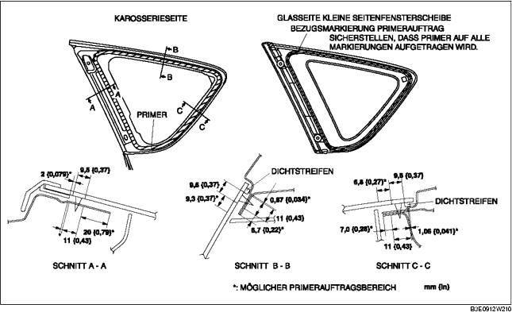

HINTERE SEITENFENSTERSCHEIBE EINBAUEN
B3E091262580W02
-
Vorsicht
-
• Die Handhabung einer Rasierklinge mit bloßen Händen kann Verletzungen verursachen. Bei der Benutzung einer Rasierklinge stets Schutzhandschuhe tragen.
-
Achtung
-
• Ein korrekter Einbau der Scheibe kann schwierig sein, wenn die Dichtung gebrochen ist oder die Scheibe beim Öffnen/Schließen einer Tür (alle Fenster geschlossen) durch den Luftdruck herausgedrückt wird. Alle Fenster offen lassen, bis die Seitenfensterscheibe vollständig eingebaut ist.
1. Das Dichtmittel mit einer Rasierklinge so abschneiden, dass am Rand 1 - 2 mm {0,04 - 0,07 in} stehenbleiben.
2. Falls das Dichtmittel an einer Stelle ganz entfernt wurde, diese Stelle entfetten, etwas Primer auftragen und ca. 30 Minuten trocknen lassen. Dann eine 2 mm {0,08 in} starke Dichtmittelwulst auftragen.
3. Den Scheibenrand auf einer Breite von ca. 50 mm {2,0 in} und die Klebefläche an der Karosserie reinigen und entfetten.
4. Den Dichtstreifen entlang dem Scheibenrand einsetzen.
5. Glas-Primer auf die Scheibe und Karosserie-Primer auf die Karosserie auftragen und dann ca. 30 min lang trocknen lassen.
-
Achtung
-
• Um eine Schwächung der Haftung des Primers zu verhindern, den Klebebereich frei von Schmutz, Feuchtigkeit und Fett halten. Die Oberfläche nicht mit den Fingern berühren.

6. Dichtmittel auf den abgebildeten Bereich der Scheibe auftragen.
7. Die Positionierungsstifte und Halter in die Karosserie einsetzen und die Seitenfensterscheibe einbauen.
8. Auf die Stellen drücken, an denen sich die Stifte in der Scheibe befinden, damit die Klauen der Stifte in die Karosserie einhaken können.
9. Folgende Bauteile einbauen:
-
(1) C-Säulenverkleidung (Siehe C-SÄULENVERKLEIDUNG AUSBAUEN/EINBAUEN.)
-
(2) Obere seitliche Kofferraumverkleidung (Siehe OBERE KOFFERRAUMSEITENVERKLEIDUNG AUSBAUEN/EINBAUEN.)
-
(3) Radkastenverkleidung (Siehe RADKASTENVERKLEIDUNG AUSBAUEN/EINBAUEN.)
-
(4) Hintere Schwellerleiste (Siehe HINTERE SCHWELLERLEISTE AUSBAUEN/EINBAUEN.)
-
(5) Rücksitz (Siehe RÜCKSITZ AUSBAUEN/EINBAUEN.)
10. Das Dichtmittel vollständig aushärten lassen.
-
Härtezeit des Dichtmittels: 24 Stunden